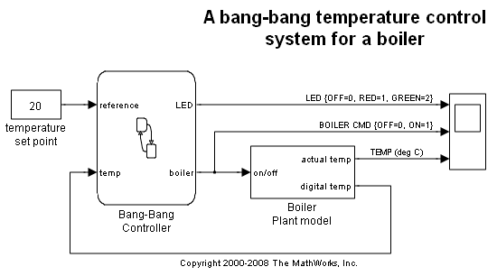
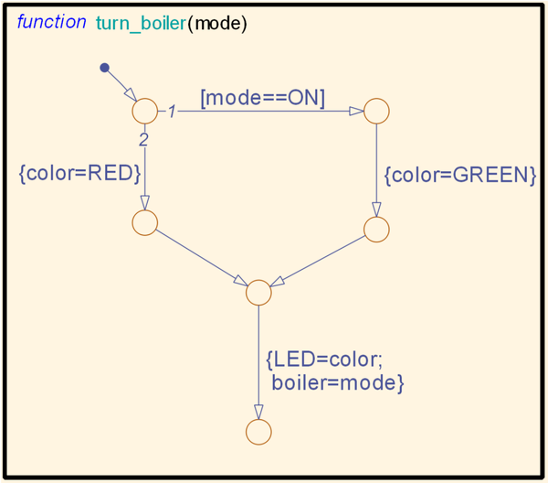
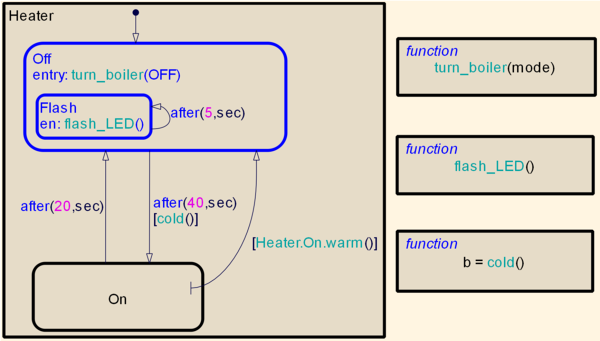
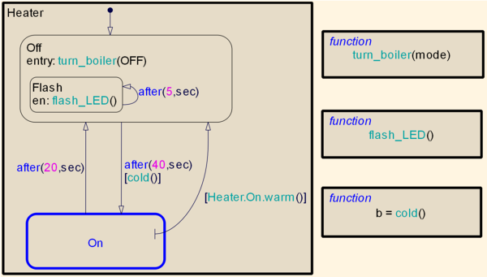
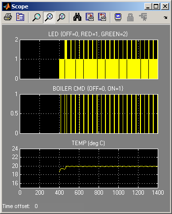

Stateflow® チャートを使ったシミュレーションの保存と復元
このデモでは、Stateflow チャートを使って [シミュレーションの保存と復元] 機能を使用する方法を示します。以下にリストされているように、2 つの一般的な使用方法があります。
- 長いシミュレーションのセグメントに分割します。
- 変更されたチャート シミュレーション状態からシミュレーションを復元することによって、異なる設定に対応するチャートをテストします。
モデル シミュレーション状態で保存された Stateflow チャートの SimState を表示する方法と、シミュレーションを復元する前にチャート SimState を変更する方法を詳しく示します。
目次
Stateflow モデルの表示
このデモでは、Stateflow デモ モデル「sf_boiler」を使用します。このモデルは、次の MATLAB® コマンドを入力して開きます。
model = 'sf_boiler';
open_system(model);
 SimState の最終保存の有効化
プログラミング上、次のコマンドによって、シミュレーションが停止したときに最終的な完全なモデル SimState を基本ワークスペースに保存できます。 指定されている SimState 変数の名前は「xFinal」です。
set_param(model, 'SaveFinalState', 'on', ... 'FinalStateName', 'xFinal', ... 'SaveCompleteFinalSimState', 'on');
これは、[コンフィギュレーション パラメーター] ダイアログでも実行できます。
- [コンフィギュレーション パラメーター] ダイアログ ボックスを開き、[データのインポート/エクスポート] ペインに移動します。
- [最終状態] チェック ボックスを選択し、希望のモデル SimState 変数名を入力します。
- [最終状態のすべての SimState を保存] チェック ボックスを選択します。
中間点へのモデルのシミュレーション
たとえば 400 など、シミュレーションの停止時間を定義します。この時間間隔でモデルをシミュレートすると、完全なシミュレーション状態が MATLAB 基本ワークスペースに変数 xFinal として t = 400 で保存されます。
tstop = 400; [t1, x1, y1] = sim(model, [0 tstop]); xFinal
xFinal =
Simulink.SimState.ModelSimState
SimState snapshot of the model 'sf_boiler' at time 400.
Properties
loggedStates
description
startTime (Read-only)
snapshotTime (Read-only)
Methods
getBlockSimState
setBlockSimState
保存されたモデル シミュレーション状態でのチャート SimState の表示
チャート SimState は、getBlockSimState を呼び出して モデルの SimState メソッドをチャート パスに渡すことによって取得できます。
chartpath = 'sf_boiler/Bang-Bang Controller';
cst = xFinal.getBlockSimState(chartpath);
チャート SimState には、チャートに含まれているすべてのグラフィカル ステートとデータ ステートについての情報があります。チャート SimState は階層的なツリー構造で管理されます。これは、チャート オブジェクトの階層と一致します。State、Function、Box など、チャート SimState でリーフのないノードは Stateflow コンテナ オブジェクトです。チャート SimState のリーフ ノードは、そのコンテナ ノードを親とする Data オブジェクトです。ドット表記を使用すると、特定のステート データに移動できます。
たとえば、チャート レベルでチャート SimState を表示するには、次のコマンドを使用します。チャートは、Box、いくつかの Function、および チャート レベル データを含んでいることが示されます。コンテナ ノードは、展開記号「+」の後にリストされます。
cst
cst =
Block: "Bang-Bang Controller" (handle) (active)
Path: <a href="matlab:open_system('sf_boiler'); open_system('sf_boiler/Bang-Bang Controller');">sf_boiler/Bang-Bang Controller</a>
Contains:
+ Heater "Box"
+ cold "Function"
+ flash_LED "Function"
+ turn_boiler "Function"
LED "Block output data" int8 [1, 1]
boiler "Block output data" int8 [1, 1]
color "Local scope data" int8 [1, 1]
Local スコープ データ「color」を親とするチャートを表示するには、次のコマンドを入力します。ディスプレイには、データのプロパティとその値が表示されます。
cst.color
ans =
Description: 'Local scope data'
DataType: 'int8'
Size: '[1, 1]'
Range: [1x1 struct]
InitialValue: [1x0 double]
Value: 1
次のコマンドでは、ボックス「Heater」内のステート「On」と「Off」を示します。ステート「Off」は現在アクティブなステートです。
cst.Heater
ans =
Box: "Heater" (handle)
Path: <a href="matlab:open_system('sf_boiler'); h = sfprivate('ssIdToHandle', 'sf_boiler/Bang-Bang Controller:1'); sf('Open', h.Id);">sf_boiler/Bang-Bang Controller/Heater</a>
Contains:
+ Off "State (OR)" (active)
+ On "State (OR)"
SimState ノードの「open」メソッドを使用して、対応するチャート オブジェクトを開くことができます。たとえば、次のコマンドを使用して、チャート エディターで関数「turn_boiler」を強調表示します。
cst.turn_boiler.open;
グラフィカル ステートのアクティビティをクエリするには、「isActive」メソッドを使用します。たとえば、次のコマンドはステート「NORM」がアクティブであるかどうかを返します。
cst.Heater.On.NORM.isActive
ans =
0
データ ステートの値を調べるには、「Value」フィールドを確認します。
cst.boiler.Value
ans =
0
次のコマンドを使用すると、アクティブなすべてのステートを強調表示することもできます。
cst.highlightActiveStates;
チャート SimState の変更
データ ステートに新しい値を割り当てるか、グラフィカル ステートのノードで「setActive」メソッドを呼び出すかすると、チャート SimState を変更できます。1 つ目の場合、新しい値はステート データの型、サイズ、および値の範囲と互換性が確認されます。2 つ目の場合、Stateflow は自動的にステートの整合性をできる限り維持します。
たとえば、チャートの出力データ「boiler」モードを「ON」に変更するには、次のコマンドを入力します。
cst.boiler.Value = 1;
現在アクティブではないステート「NORM」をアクティブにするには、「NORM」ノードの setActive メソッドを呼び出します。
cst.Heater.On.NORM.setActive;
「checkStateConsistency」メソッドを呼び出すことによって、グラフィカル ステートのアクティビティの変更後にチャート ステートの整合性を確認できます。
cst.checkStateConsistency;
States are consistent!
更新されたチャート SimState に満足であれば、「setBlockSimState」メソッドを使用してモデル シミュレーションに設定を戻すことができます。たとえば、更新されたチャート SimState を使用して、MATLAB 基本ワークスペースで新しいモデル SimState 変数「xInitial」を作成するには、次のコマンドを入力します。
xInitial = xFinal.setBlockSimState(chartpath, cst);
保存されたモデル SimState からのシミュレーションの復元
モデルのシミュレーションは、古いセッションで保存されたモデル SimState から復元することができます。これをデモするには、「sf_boiler」を閉じてもう一度開きます。
close_system(model, 0); open_system(model);
プログラミング上、次のコマンドを使用すると、シミュレーションの開始時にモデル SimState をロードできます。指定されている SimState 変数の名前は「xInitial」です。
set_param(model, 'LoadInitialState', 'on', ... 'InitialState', 'xInitial');
これは、[コンフィギュレーション パラメーター] ダイアログでも実行できます。
- [コンフィギュレーション パラメーター] ダイアログ ボックスを開き、[データのインポート/エクスポート] ペインに移動します。
- [初期状態] チェック ボックスを選択し、希望のモデル SimState 変数名を入力します。
シミュレーションを開始し、シミュレーションが保存された SimState から再開されることを観察します。
[t2, x2, y2] = sim(model);
open_system('sf_boiler/Scope');
